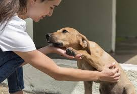
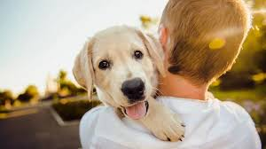
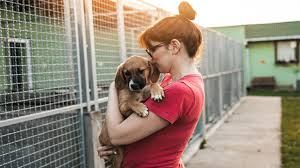

Experiencias de Adoptantes
Conoce historias inspiradoras de quienes le han dado una nueva oportunidad de vida a un amigo peludo.

María López y Toby
Adoptado: Casa cuna de Cañas
Adoptado hace: 2 años
Historia: "Adopté a Toby cuando tenía solo 6 meses. Era un perrito muy tímido, pero con amor y paciencia se convirtió en el compañero más fiel. No puedo imaginar mi vida sin él."

Carlos Fernández y Luna
Adoptada: Casa cuna de Santa Cruz
Adoptada hace: 1 año
Historia: "Luna llegó a nuestra familia justo cuando más la necesitábamos. Su energía y cariño llenaron nuestro hogar de alegría. Recomiendo a todos adoptar, ¡es una experiencia transformadora!"

Ana Gutiérrez y Rocky
Adoptado: Casa cuna de Liberia
Adoptado hace: 3 años
Historia: "Rocky fue rescatado de condiciones muy difíciles. Ahora es el rey de la casa y un excelente guardián. Adoptar fue lo mejor que pudimos hacer."